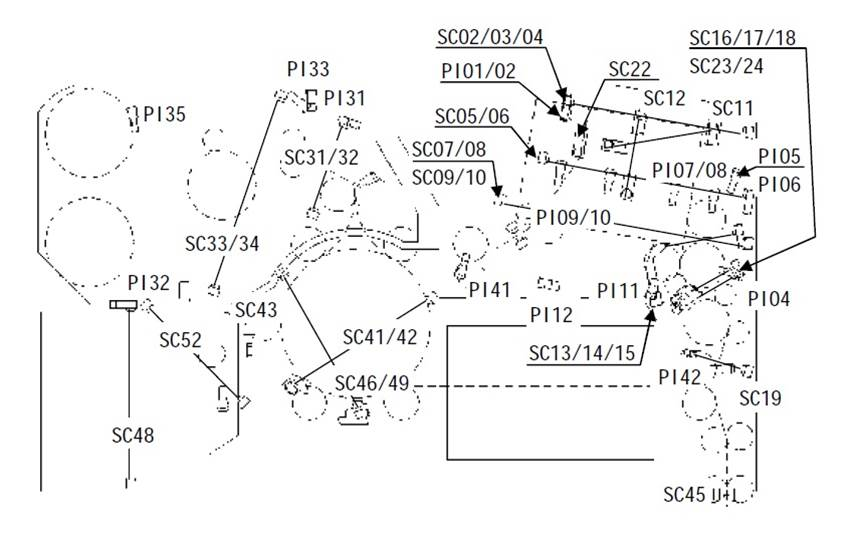
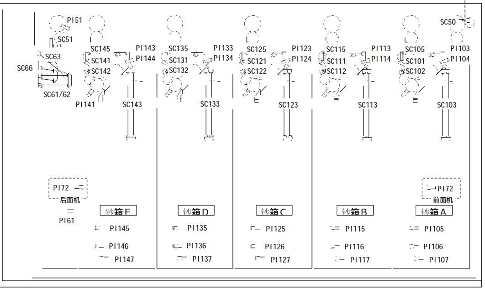
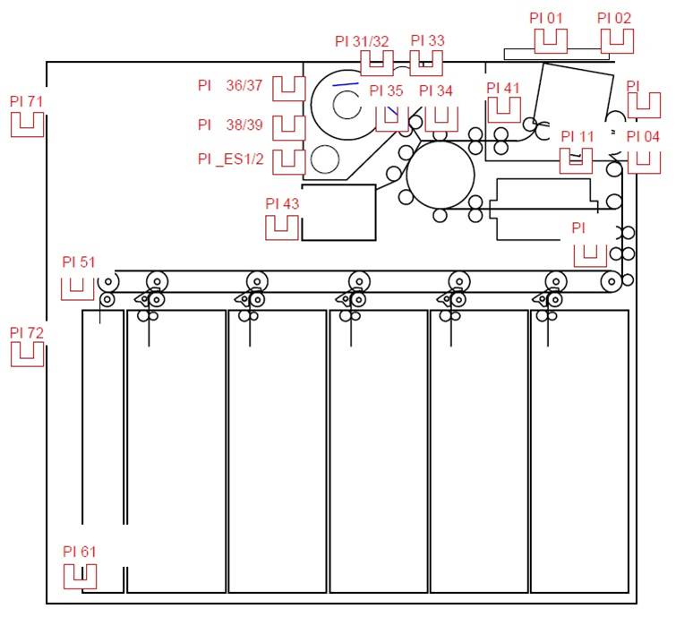
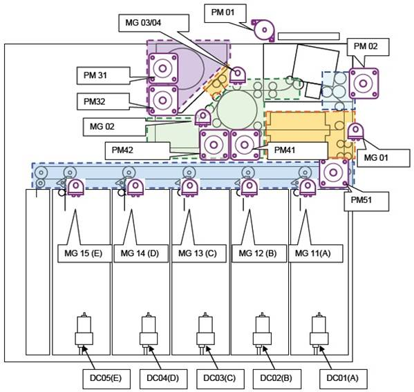
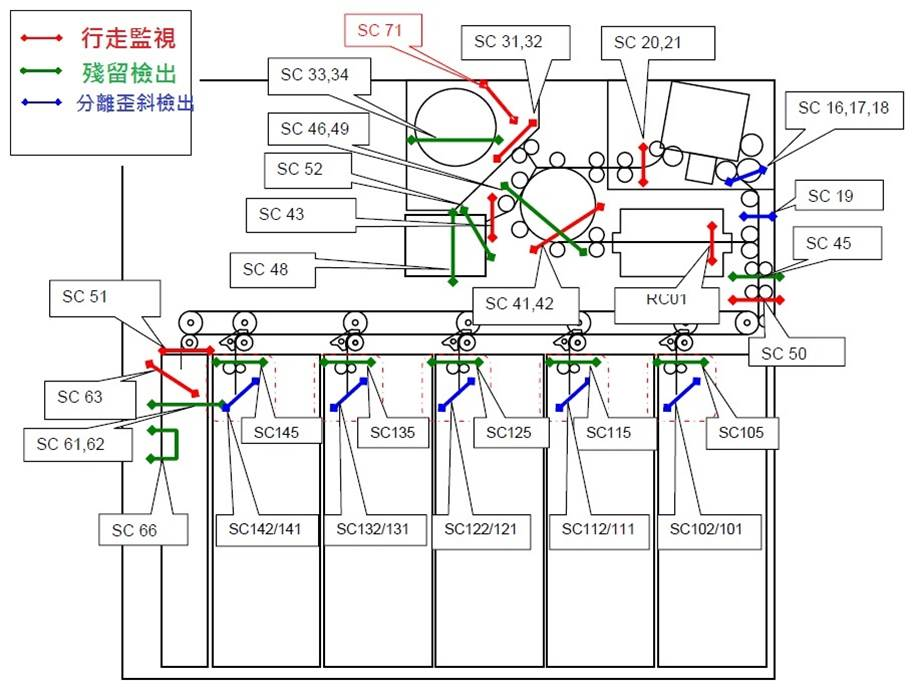
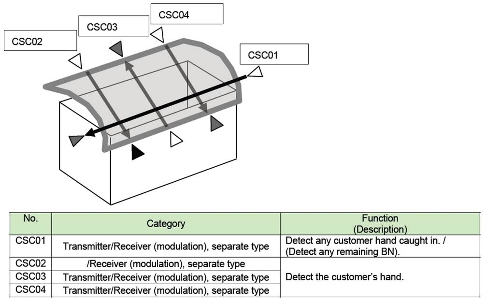

●回上一層
●回主選單







"'01':'●BRM unit (installation errors)
●Door open/Hardware error in BRM●1. The front/back door is open. Or there are remaining banknotes in BRM. Or the control board failure in BRM.
2. Close the door or remove the banknotes from BRM.
3. Reset the system from maintenance menu.
4. In case error can not be cleared, contact the maintenance staff.●'"